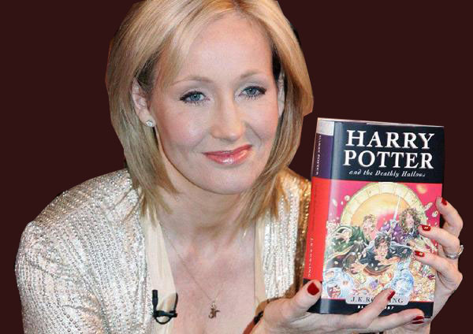

Autora
Mais conhecida como J. K. Rowling, é uma escritora, roteirista e produtora cinematográfica britânica, notória por escrever a série de livros Harry Potter. Os livros ganharam uma popularidade mundial, recebendo múltiplos prêmios e vendendo mais de 400 milhões de cópias. Eles se tornaram a série literária mais vendida da história. A Warner Bros. adaptou os livros para o cinema, fazendo com que os filmes entrassem na lista de filmes de maior bilheteria. Nascida em Yate, na Inglaterra, Rowling teve a ideia de escrever a série enquanto estava num trem indo de Manchester para Londres, em 1990. Em um período de sete anos, Rowling vivenciou a morte de sua mãe, o nascimento de sua primeira filha, seu divórcio com seu primeiro marido e uma crise financeira pessoal até que, em 1997, finalizou o primeiro dos sete livros da série, Harry Potter e a Pedra Filosofal e o último, Harry Potter e as Relíquias da Morte, em 2007. Desde então, Rowling já escreveu quatro livros para o público adulto, Morte Súbita (2012) e, sob o pseudônimo de Robert Galbraith, O Chamado do Cuco (2013), precedido por O Bicho-da-Seda (2014) e Vocação Para o Mal (2015). Depois do sucesso de Harry Potter, Rowling se reergueu financeiramente e foi da pobreza a uma riqueza multimilionária em cinco anos. Ela é a autora britânica com o maior número de vendas, chegando a mais de 238 milhões de libras em livros vendidos. A Lista dos Ricos do Jornal Sunday Times de 2016 estimou a fortuna de Rowling em 500 milhões de libras, classificando-a como a 197ª pessoa mais rica do Reino Unido. Em 2007, a revista Time nomeou-a como Pessoa do Ano, ressaltando a inspiração social, moral e política que ela deu a seus fãs. Em outubro de 2010, Rowling foi nomeada a "Mulher Mais Influente da Grã-Bretanha" pelos principais editores de revista e, no mesmo ano, foi classificada como a 40ª pessoa mais poderosa pela revista Forbes. Ela apoia diversas instituições de caridade, tais como a Comic Relief, a One Parent Families, a Multiple Sclerosis Society of Great Britain e a Lumos (criada pela própria) Harry Potter e a Pedra Filosofal Harry Potter e a Câmara Secreta Harry Potter e o Prisioneiro de Azkaban Harry Potter e o Cálice de Fogo Harry Potter e a Ordem da Fênix Harry Potter e o Enigma do Príncipe Harry Potter e as Relíquias da Morte.